From sliding windows and region proposals to a one-stage detector running on a webcam in Colab
Object detection concepts, selective search region proposals, YOLO theory, and YOLOv4 inference on images and webcam video.
NoteAbout this edition
English text and comments were edited for publication. Outputs are archived notebook results, not newly executed results. Lab scaffolds and reference illustrations were supplied by the course. Source and reproducibility notes.
TipSummary
Object detection = image classification + bounding-box regression, for possibly many objects per image. The lab reviews applications, the sliding-window approach, and selective search region proposals (run on a fruit image with the selectivesearch package). It then summarizes the theory of YOLO (confidence score, IoU, loss function) and runs a pre-trained scaled YOLOv4-CSP model through the Darknet framework in Google Colab: on a test image, on a webcam snapshot, and on live webcam video with bounding boxes overlaid frame by frame.
1. Object Detection
1.1 What is object detection?
Until now, every computer vision problem seen in this course (lectures, labs, assignments) has been an image classification problem.
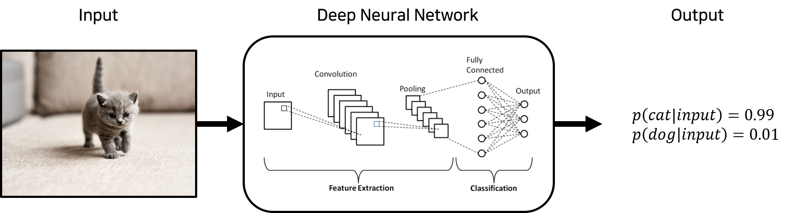
Coursework figure 1: 1.1 What is object detection?
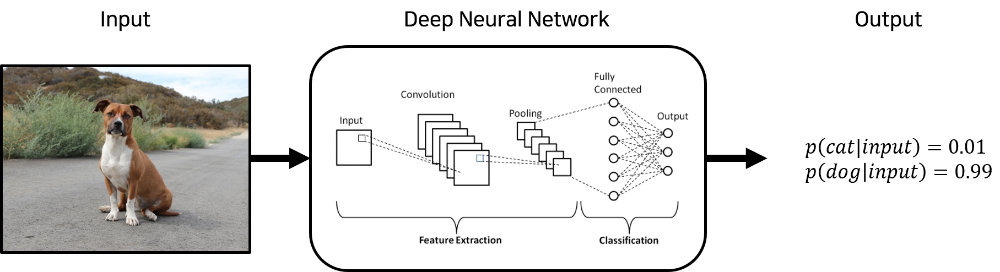
Coursework figure 2: 1.1 What is object detection?
Object detection adds a regression problem, predicting the location of objects as bounding boxes, on top of image classification.
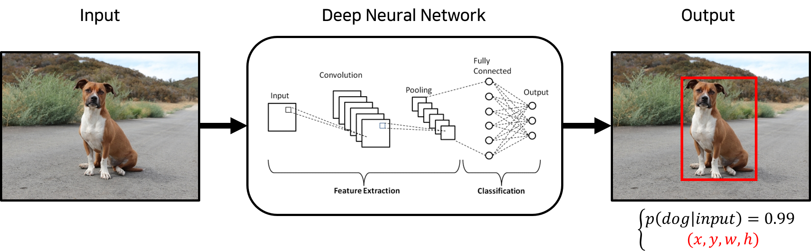
Coursework figure 3: 1.1 What is object detection?
Moreover, when an image contains several objects, all of them are detected.
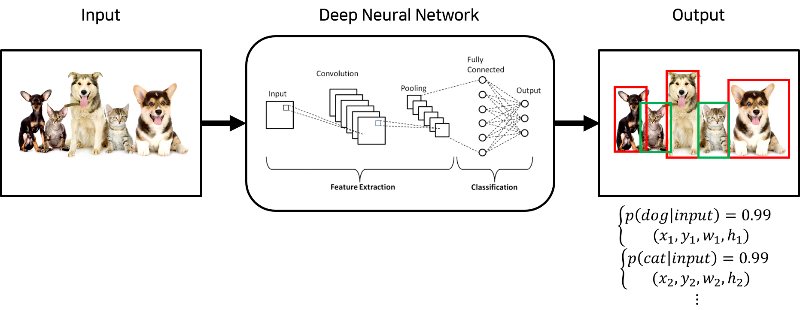
Coursework figure 4: 1.1 What is object detection?
The history of object detection is summarized below; AlexNet (a deep CNN) marks the split between pre-deep-learning (left) and deep-learning (right) methods.
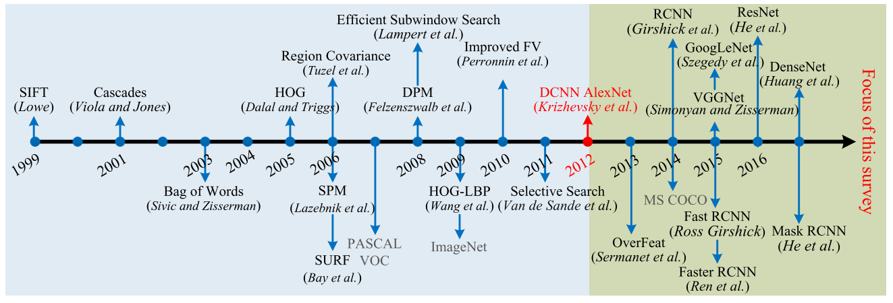
Coursework figure 5: 1.1 What is object detection?
1.2 Applications of Object Detection
1) Advanced Driver Assistance Systems (ADAS)
Driver assistance systems
Pedestrians, other vehicles and traffic signs are detected for autonomous driving and ADAS
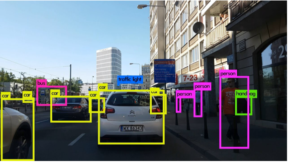
Coursework figure 6: 1) Advanced Driver Assistance Systems (ADAS)
2) Manufacturing
Defect inspection of products
Cameras mounted over conveyor belts inspect the products
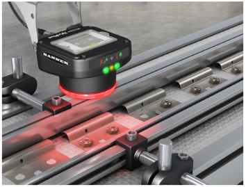
Coursework figure 7: 2) Manufacturing
3) Sports analytics
Player positions are detected to analyze the game
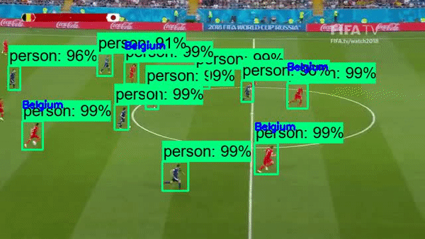
Coursework figure 8: 3) Sports analytics
4) And more
Unmanned stores
Body / pose recognition
Aerial image analysis: terrain analysis from above
CCTV surveillance
2. Techniques for Finding Objects
2.1 Sliding Window
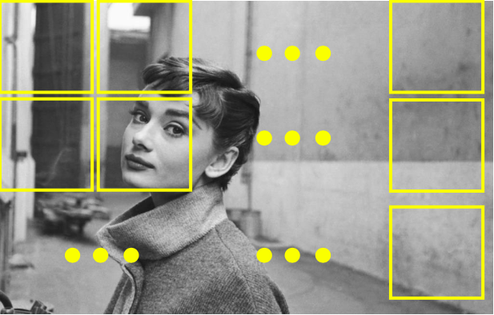
Coursework figure 9: 2.1 Sliding Window
A window is slid from the top-left to the bottom-right of the image, looking for objects at every position.
Method 1: slide windows of various sizes
Method 2: keep the window size fixed and rescale the image to various sizes
Problems: slow, and low detection performance
2.2 Selective Search
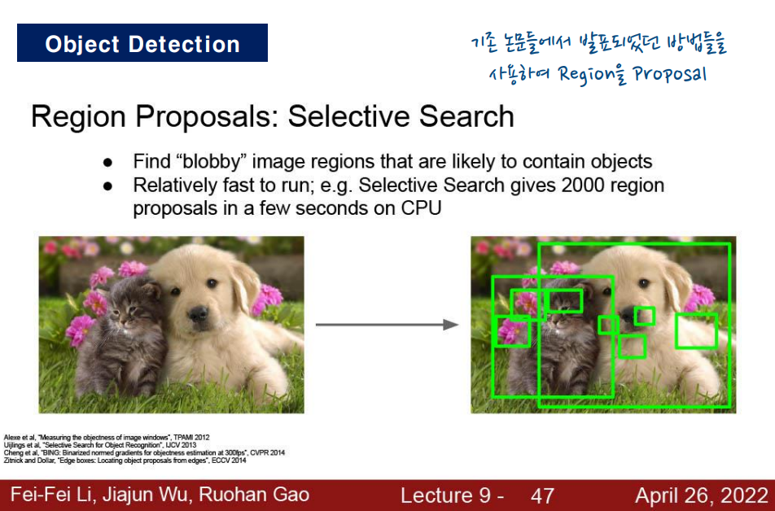
Coursework figure 10: 2.2 Selective Search
2.2.1 How selective search works
Over-segment the input image
Iteratively merge small regions into larger ones
Use the segmented region proposals to generate candidate object locations
Recorded output 12: 2.2.2 Selective search in practice
import selectivesearch# Parameters# img_rgb : input image# scale : algorithm parameter related to the number of segments (see https://github.com/AlpacaTechJP/selectivesearch)# min_size : minimum size of a candidate object location# Output# regions : regions likely to contain an object#_, regions = selectivesearch.selective_search(img_rgb, scale=50, min_size=100)_, regions = selectivesearch.selective_search(img_rgb, scale=500, min_size=10000)print(type(regions), len(regions))
cand_rects = [cand['rect'] for cand in regions]green_rgb = (125,255,51)img_rgb_copy = img_rgb.copy() # work on a copyfor rect in cand_rects: left=rect[0] top=rect[1] right = left + rect[2] bottom = top + rect[3] img_rgb_copy = cv2.rectangle(img_rgb_copy, (left,top),(right,bottom),color=green_rgb, thickness=2)# rectangle given by its top-left and bottom-right cornersplt.figure(figsize=(8,8))plt.imshow(img_rgb_copy)plt.show()
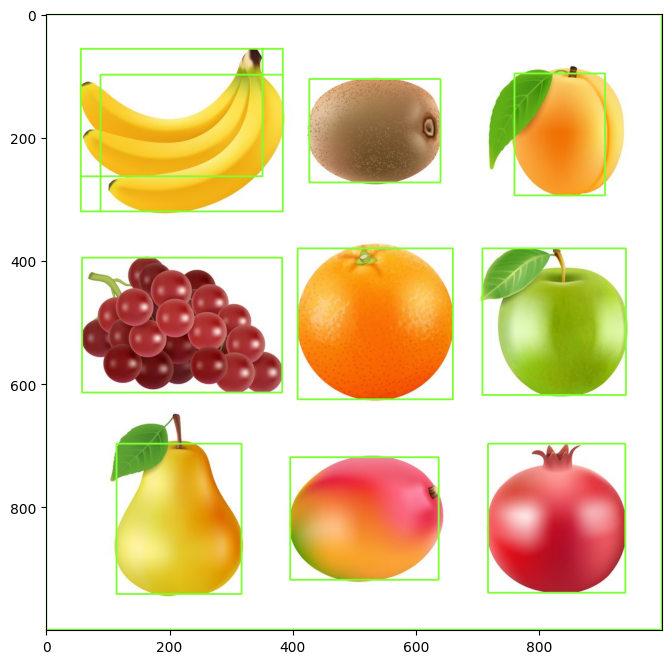
Recorded output 13: 2.2.2 Selective search in practice
3. You Only Look Once (YOLO): Theory
As seen above, object detection is bounding-box regression + image classification.
Before YOLO, object detection was done in two stages:
compute regions of interest (ROIs, region proposals) in the image
run classification / regression on each ROI
Doing detection in two stages makes training and inference slow.
YOLO has the architecture below and performs bounding-box regression and classification simultaneously.
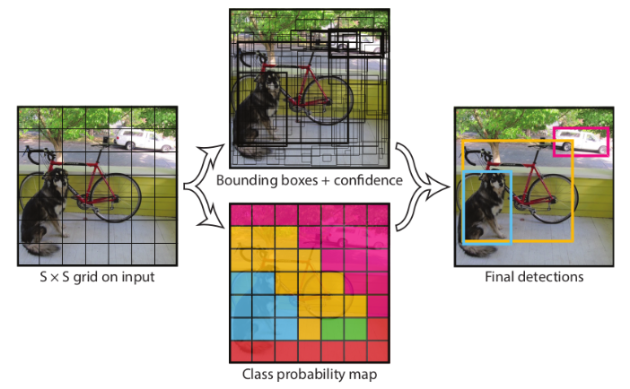
Coursework figure 14: 3. You Only Look Once (YOLO): Theory
# change makefile to have GPU, OPENCV and LIBSO enabled%cd darknet!sed -i 's/OPENCV=0/OPENCV=1/' Makefile!sed -i 's/GPU=0/GPU=1/' Makefile!sed -i 's/CUDNN=0/CUDNN=1/' Makefile!sed -i 's/CUDNN_HALF=0/CUDNN_HALF=1/' Makefile!sed -i 's/LIBSO=0/LIBSO=1/' Makefile
/content/darknet
# make darknet (builds darknet so that you can then use the darknet.py file and have its dependencies)!make
Download pre-trained weights.
# get bthe scaled yolov4 weights file that is pre-trained to detect 80 classes (objects) from shared google drive!wget --load-cookies /tmp/cookies.txt "https://docs.google.com/uc?export=download&confirm=$(wget --quiet --save-cookies /tmp/cookies.txt --keep-session-cookies --no-check-certificate 'https://docs.google.com/uc?export=download&id=1V3vsIaxAlGWvK4Aar9bAiK5U0QFttKwq' -O- | sed -rn 's/.*confirm=([0-9A-Za-z_]+).*/\1\n/p')&id=1V3vsIaxAlGWvK4Aar9bAiK5U0QFttKwq"-O yolov4-csp.weights && rm -rf /tmp/cookies.txt
Darknet for Python
Helper functions needed to use the framework:
resize the input image
obtain bounding boxes from YOLO
# import darknet functions to perform object detectionsfrom darknet import*# load in our YOLOv4 architecture networknetwork, class_names, class_colors = load_network("cfg/yolov4-csp.cfg", "cfg/coco.data", "yolov4-csp.weights")width = network_width(network)height = network_height(network)print(width)print(height)# darknet helper function to run detection on imagedef darknet_helper(img, width, height): darknet_image = make_image(width, height, 3) img_rgb = cv2.cvtColor(img, cv2.COLOR_BGR2RGB) img_resized = cv2.resize(img_rgb, (width, height), interpolation=cv2.INTER_LINEAR)# get image ratios to convert bounding boxes to proper size img_height, img_width, _ = img.shape width_ratio = img_width/width height_ratio = img_height/height# run model on darknet style image to get detections copy_image_from_bytes(darknet_image, img_resized.tobytes()) detections = detect_image(network, class_names, darknet_image) free_image(darknet_image)return detections, width_ratio, height_ratio
512
512
YOLOv4 example on a test image
Test on one of the sample images shipped with YOLO.
# run test on person.jpg image that comes with repository# data : "horses.jpg", "dog.jpg" , "eagle.jpg", "giraffe.jpg", "person.jpg", "scream.jpg",image = cv2.imread("data/person.jpg")detections, width_ratio, height_ratio = darknet_helper(image, width, height)for label, confidence, bbox in detections: left, top, right, bottom = bbox2points(bbox) left, top, right, bottom =int(left * width_ratio), int(top * height_ratio), int(right * width_ratio), int(bottom * height_ratio) cv2.rectangle(image, (left, top), (right, bottom), class_colors[label], 2) cv2.putText(image, "{} [{:.2f}]".format(label, float(confidence)), (left, top -5), cv2.FONT_HERSHEY_SIMPLEX, 0.5, class_colors[label], 2)cv2_imshow(image)
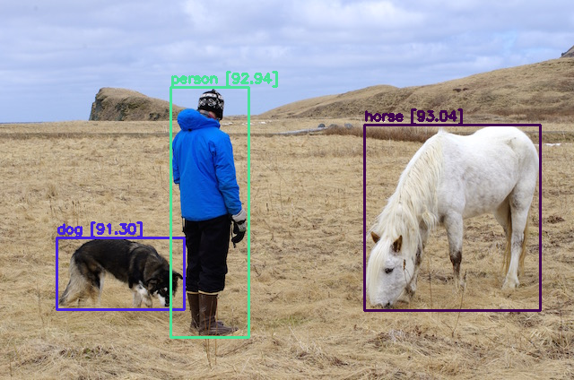
Recorded output 17: YOLOv4 example on a test image
Helper functions
Image conversion utilities
# function to convert the JavaScript object into an OpenCV imagedef js_to_image(js_reply):""" Params: js_reply: JavaScript object containing image from webcam Returns: img: OpenCV BGR image """# decode base64 image image_bytes = b64decode(js_reply.split(',')[1])# convert bytes to numpy array jpg_as_np = np.frombuffer(image_bytes, dtype=np.uint8)# decode numpy array into OpenCV BGR image img = cv2.imdecode(jpg_as_np, flags=1)return img# function to convert OpenCV Rectangle bounding box image into base64 byte string to be overlayed on video streamdef bbox_to_bytes(bbox_array):""" Params: bbox_array: Numpy array (pixels) containing rectangle to overlay on video stream. Returns: bytes: Base64 image byte string """# convert array into PIL image bbox_PIL = PIL.Image.fromarray(bbox_array, 'RGBA') iobuf = io.BytesIO()# format bbox into png for return bbox_PIL.save(iobuf, format='png')# format return string bbox_bytes ='data:image/png;base64,{}'.format((str(b64encode(iobuf.getvalue()), 'utf-8')))return bbox_bytes
YOLOv4 on webcam images
Run YOLO on an image captured from the webcam.
The webcam image is the YOLO input; the outputs are bounding boxes and confidences.
The boxes are drawn on the original image to show the detection result.
def take_photo(filename='photo.jpg', quality=0.8): js = Javascript(''' async function takePhoto(quality) { const div = document.createElement('div'); const capture = document.createElement('button'); capture.textContent = 'Capture'; div.appendChild(capture); const video = document.createElement('video'); video.style.display = 'block'; const stream = await navigator.mediaDevices.getUserMedia({video: true}); document.body.appendChild(div); div.appendChild(video); video.srcObject = stream; await video.play(); // Resize the output to fit the video element. google.colab.output.setIframeHeight(document.documentElement.scrollHeight, true); // Wait for Capture to be clicked. await new Promise((resolve) => capture.onclick = resolve); const canvas = document.createElement('canvas'); canvas.width = video.videoWidth; canvas.height = video.videoHeight; canvas.getContext('2d').drawImage(video, 0, 0); stream.getVideoTracks()[0].stop(); div.remove(); return canvas.toDataURL('image/jpeg', quality); } ''') display(js)# get photo data data = eval_js('takePhoto({})'.format(quality))# get OpenCV format image img = js_to_image(data)# call our darknet helper on webcam image detections, width_ratio, height_ratio = darknet_helper(img, width, height)# loop through detections and draw them on webcam imagefor label, confidence, bbox in detections: left, top, right, bottom = bbox2points(bbox) left, top, right, bottom =int(left * width_ratio), int(top * height_ratio), int(right * width_ratio), int(bottom * height_ratio) cv2.rectangle(img, (left, top), (right, bottom), class_colors[label], 2) cv2.putText(img, "{} [{:.2f}]".format(label, float(confidence)), (left, top -5), cv2.FONT_HERSHEY_SIMPLEX, 0.5, class_colors[label], 2)# save image cv2.imwrite(filename, img)return filename
try: filename = take_photo('photo.jpg')print('Saved to {}'.format(filename))# Show the image which was just taken. display(Image(filename))exceptExceptionas err:# Errors will be thrown if the user does not have a webcam or if they do not# grant the page permission to access it.print(str(err))
YOLOv4 on webcam video
A video is a sequence of images. The procedure is:
feed one frame of the video to YOLO,
update the bounding boxes obtained from that frame,
repeat 1–2 for the next frame.
Coursework figure 18: YOLOv4 on webcam video
# JavaScript to properly create our live video stream using our webcam as inputdef video_stream(): js = Javascript(''' var video; var div = null; var stream; var captureCanvas; var imgElement; var labelElement; var pendingResolve = null; var shutdown = false; function removeDom() { stream.getVideoTracks()[0].stop(); video.remove(); div.remove(); video = null; div = null; stream = null; imgElement = null; captureCanvas = null; labelElement = null; } function onAnimationFrame() { if (!shutdown) { window.requestAnimationFrame(onAnimationFrame); } if (pendingResolve) { var result = ""; if (!shutdown) { captureCanvas.getContext('2d').drawImage(video, 0, 0, 640, 480); result = captureCanvas.toDataURL('image/jpeg', 0.8) } var lp = pendingResolve; pendingResolve = null; lp(result); } } async function createDom() { if (div !== null) { return stream; } div = document.createElement('div'); div.style.border = '2px solid black'; div.style.padding = '3px'; div.style.width = '100%'; div.style.maxWidth = '600px'; document.body.appendChild(div); const modelOut = document.createElement('div'); modelOut.innerHTML = "<span>Status:</span>"; labelElement = document.createElement('span'); labelElement.innerText = 'No data'; labelElement.style.fontWeight = 'bold'; modelOut.appendChild(labelElement); div.appendChild(modelOut); video = document.createElement('video'); video.style.display = 'block'; video.width = div.clientWidth - 6; video.setAttribute('playsinline', ''); video.onclick = () => { shutdown = true; }; stream = await navigator.mediaDevices.getUserMedia( {video: { facingMode: "environment"}}); div.appendChild(video); imgElement = document.createElement('img'); imgElement.style.position = 'absolute'; imgElement.style.zIndex = 1; imgElement.onclick = () => { shutdown = true; }; div.appendChild(imgElement); const instruction = document.createElement('div'); instruction.innerHTML = '<span style="color: red; font-weight: bold;">' + 'When finished, click here or on the video to stop this demo</span>'; div.appendChild(instruction); instruction.onclick = () => { shutdown = true; }; video.srcObject = stream; await video.play(); captureCanvas = document.createElement('canvas'); captureCanvas.width = 640; //video.videoWidth; captureCanvas.height = 480; //video.videoHeight; window.requestAnimationFrame(onAnimationFrame); return stream; } async function stream_frame(label, imgData) { if (shutdown) { removeDom(); shutdown = false; return ''; } var preCreate = Date.now(); stream = await createDom(); var preShow = Date.now(); if (label != "") { labelElement.innerHTML = label; } if (imgData != "") { var videoRect = video.getClientRects()[0]; imgElement.style.top = videoRect.top + "px"; imgElement.style.left = videoRect.left + "px"; imgElement.style.width = videoRect.width + "px"; imgElement.style.height = videoRect.height + "px"; imgElement.src = imgData; } var preCapture = Date.now(); var result = await new Promise(function(resolve, reject) { pendingResolve = resolve; }); shutdown = false; return {'create': preShow - preCreate, 'show': preCapture - preShow, 'capture': Date.now() - preCapture, 'img': result}; } ''') display(js)def video_frame(label, bbox): data = eval_js('stream_frame("{}", "{}")'.format(label, bbox))return data
Running on webcam video
# start streaming video from webcamvideo_stream()# label for videolabel_html ='Capturing...'# initialze bounding box to emptybbox =''count =0whileTrue: js_reply = video_frame(label_html, bbox)ifnot js_reply:break# convert JS response to OpenCV Image frame = js_to_image(js_reply["img"])# create transparent overlay for bounding box bbox_array = np.zeros([480,640,4], dtype=np.uint8)# call our darknet helper on video frame detections, width_ratio, height_ratio = darknet_helper(frame, width, height)# loop through detections and draw them on transparent overlay imagefor label, confidence, bbox in detections: left, top, right, bottom = bbox2points(bbox) left, top, right, bottom =int(left * width_ratio), int(top * height_ratio), int(right * width_ratio), int(bottom * height_ratio) bbox_array = cv2.rectangle(bbox_array, (left, top), (right, bottom), class_colors[label], 2) bbox_array = cv2.putText(bbox_array, "{} [{:.2f}]".format(label, float(confidence)), (left, top -5), cv2.FONT_HERSHEY_SIMPLEX, 0.5, class_colors[label], 2) bbox_array[:,:,3] = (bbox_array.max(axis =2) >0 ).astype(int) *255# convert overlay of bbox into bytes bbox_bytes = bbox_to_bytes(bbox_array)# update bbox so next frame gets new overlay bbox = bbox_bytes